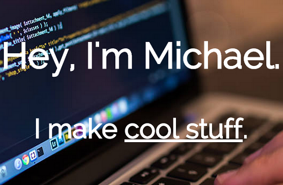
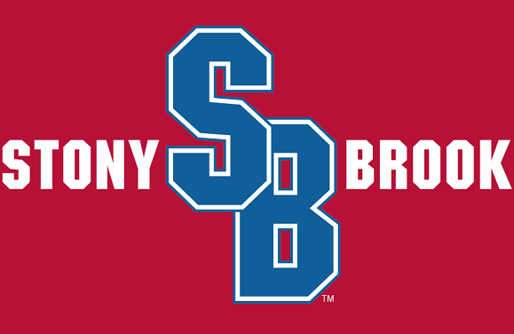

Latest Projects

It's the very own source code for this very own website that you're on right now! Uses Node.js + Express on the back-end.
Check it out
Although it was written with Twitch.tv in mind, this Java library can be easily extended to create IRC bots and other useful applications for different servers.
Check it out

This is one of the many websites I've worked on for Stony Brook University, during a phase in which the university began pushing for responsiveness in their sites.
Check it out